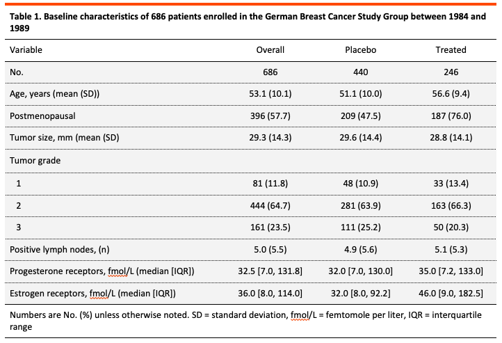

library(survival) # only needed for the dataset in this example
library(dplyr) # to modify the needed dataframe
library(tibble) # for rownames_to_column() function
library(stringr) # for str_squish()
library(flextable)
library(officer)
library(forcats)
library(tableone)
source("customtab.R")In this post, I will show you how to make publication-ready using a combination of the flextable package and a function I’ve written to customize them according to my default layout. This will minimize the need to edit in MS Word, and copy and paste from Excel to Word when exporting tables from R. In this example, I will use the tableone package to show how my customtab() function can be used to export Table 1.
The flextable package is a great package to generate word tables from R output. Together with the officer package from the same creator, it allows you to make most of the customization needed immediately in R, and thus let’s you skip this potentially annoying step in MS Word. The tableone package is a great package for, you guessed it, generating Table 1s. It allows for p-value calculations, SMDs, and generally just the output that you need.
For demonstration, I will use the gbsg dataset from the from the survival package. If you just want to try out the customtab() function, it can be downloaded here.
OK, let’s begin!
Load the dataset:
breast <- survival::gbsgRunning ?survival::gbsg gives:
The gbsg data set contains patient records from a 1984 — 1989 trial conducted by the German Breast Cancer Study Group (GBSG) of 720 patients with node positive cancer…
| Variable | Explanation |
|---|---|
| pid | Patiend ID |
| age | Age in years |
| meno | Menopausal staus - 0 = premenopaus, 1 = postmenopaus |
| size | tumor size |
| grade | tumor grade |
| nodes | number of positive lymph nodes |
| pgr | progesterone receptors (fmol/L) |
| er | estrogen receptors (fmol/L) |
| hormon | hormone therapy - 0 = no, 1 = yes |
| rfstime | recurrence free survival time in days |
| status | 0 = alive without recurrence, 1 = recurrence or death |
Select variables included in Table 1.
variables <- names(breast)
breast <- breast %>% select(all_of(variables)) %>%
select(-pid, -rfstime, -status)
breast <- breast %>% mutate(meno = as_factor(meno),
grade = as_factor(grade),
hormon = as_factor(hormon))Rename the variables as they should appear in the table. While tableone can add explanation for you, I genereally prefer to type them out myself to keep track of what I actually want to get (e.g. is it mean or median?)
breast <- breast %>% rename(`Age, years (mean (SD))` = age,
Postmenopausal = meno,
`Tumor size, mm (mean (SD)` = size,
`Tumor grade` = grade,
`Positive lymph nodes, (n)` = nodes,
`Progesterone receptors, fmol/L (median [IQR])` = pgr,
`Estrogen receptors, fmol/L (median [IQR])` = er,
`Hormone treatment` = hormon)Relabel hormon variable to more text friendly labels
breast$`Hormone treatment` <- breast$`Hormone treatment` %>%
fct_recode(Treated = "1", Placebo = "0")Select all variables and specify categorical variables for tableone
# All variables excluding the group variable
myVars <- breast %>% select(-`Hormone treatment`) %>% names()
# All categorical variables
catVars <- breast %>% select(where(is.factor)) %>%
dplyr::select(-`Hormone treatment`) %>% names()Create Table 1 object
tab1 <- breast %>% CreateTableOne(vars = myVars,
data = . ,
factorVars = catVars,
strata = "Hormone treatment",
addOverall = T,
test = T)Print Table 1 object to control output, e.g. remove missing, print non-normal variables correctly etc.
tab1_word <- print(tab1,
nonnormal = c("Progesterone receptors, fmol/L (median [IQR])",
"Estrogen receptors, fmol/L (median [IQR])"),
quote = F,
noSpaces = T,
# smd = T,
# missing = T,
test = F,
contDigits = 1,
printToggle = F,
dropEqual = T,
explain = F)custom_tab() needs a dataframe as argument, so first we convert the tableone object
# Convert to dataframe
tab1_df <- as.data.frame(tab1_word) %>% rownames_to_column(var = "Variable")Use custom_tab() to export the MS Word table.
Important: run customtab_defaults() before using the custom_tab() function to get correct formatting
# Rename first variable from n to No.
tab1_df$Variable[1] <- "No."
# Set Table header
header <- str_squish(str_remove("Table 1. Baseline characteristics of 686
patients enrolled in the German Breast Cancer Study Group
between 1984 and 1989", "\n"))
# Set Table footer
footer <- str_squish(str_remove("Numbers are No. (%) unless otherwise noted.
SD = standard deviation, fmol/L = femtomole per liter,
IQR = interquartile range", "\n"))
# Set custom_tab() defaults
customtab_defaults()
# Create the flextable object
flextable_1 <- custom_tab(tab1_df, header, footer)
flextable_1Table 1. Baseline characteristics of 686 patients enrolled in the German Breast Cancer Study Group between 1984 and 1989 | |||
|---|---|---|---|
Variable | Overall | Placebo | Treated |
No. | 686 | 440 | 246 |
Age, years (mean (SD)) | 53.1 (10.1) | 51.1 (10.0) | 56.6 (9.4) |
Postmenopausal | 396 (57.7) | 209 (47.5) | 187 (76.0) |
Tumor size, mm (mean (SD) | 29.3 (14.3) | 29.6 (14.4) | 28.8 (14.1) |
Tumor grade | |||
1 | 81 (11.8) | 48 (10.9) | 33 (13.4) |
2 | 444 (64.7) | 281 (63.9) | 163 (66.3) |
3 | 161 (23.5) | 111 (25.2) | 50 (20.3) |
Positive lymph nodes, (n) | 5.0 (5.5) | 4.9 (5.6) | 5.1 (5.3) |
Progesterone receptors, fmol/L (median [IQR]) | 32.5 [7.0, 131.8] | 32.0 [7.0, 130.0] | 35.0 [7.2, 133.0] |
Estrogen receptors, fmol/L (median [IQR]) | 36.0 [8.0, 114.0] | 32.0 [8.0, 92.2] | 46.0 [9.0, 182.5] |
Numbers are No. (%) unless otherwise noted. SD = standard deviation, fmol/L = femtomole per liter, IQR = interquartile range | |||
Save the resulting table as .docx
# Save as word .docx
save_as_docx(flextable_1, path = "flextab_1.docx",
pr_section =
prop_section(page_size = page_size(orient = "portrait"),
type = "continuous"))This will generate the following MS Word Table:

The customtab_defaults() function simply sets some defaults for your tables, and can be changed to match the requirements of the journal you will be submitting to
customtab_defaults <- function(){
set_flextable_defaults(font.family = "Calibri",
font.size = 10,
border.color = "black")
}The custom_tab() function looks like this
######### Create default BioAVR table from dataframe
#
# Dependencies : dplyr, flextable, officer
#
custom_tab <- function(df, header, footer){
flextable(df) %>%
add_header_lines(header) %>%
add_footer_lines(footer) %>%
bold(i = 1, part = "header") %>%
hline_top(part = "header",
border = fp_border(color = "red",
width = 3,
style = "solid")) %>%
hline(i = 1,
part = "header",
border = fp_border(color = "black",
width = 0.25,
style = "solid")) %>%
hline_top(part = "body",
border = fp_border(color = "black",
width = 0.25,
style = "solid")) %>%
hline_bottom(part = "body",
border = fp_border(color = "black",
width = 0.25,
style = "solid")) %>%
hline_bottom(part = "footer",
border = fp_border(color = "black",
width = 0.25,
style = "solid")) %>%
border_inner_h(part = "body",
border = fp_border(color = "black",
width = 0.25,
style = "dotted")) %>%
autofit(part = "body") %>%
bg(part = "body", bg = "#f5f5f5") %>%
align(part = "all", align = "center") %>%
align(j = 1, part = "all", align = "left")
}What it does is:
1. Add header and footer
2. Make header bold
3. Adds red and black border for header
4. Adds black borders for footer
5. Adds dotted borders for body content
6. Adds gray background to body
This is a standard design I go for in my tables, but it can of course be changed to your own or journal specific requirements. While flextable allows output to other formats as well, I generally only use this for MS Word output. The reason is that I’ve noticed problems with the borders when outputting to pdf or image formats.